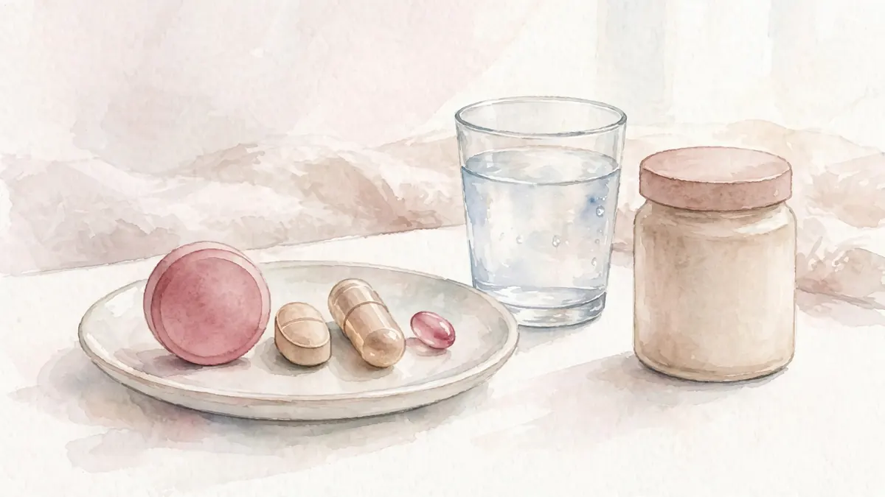

トップ ＞ インナーケア・サプリ ＞ 粒の大きさ・形状で選ぶ飲みやすさ
粒の大きさ・形状で選ぶ飲みやすさ

サプリメントは、粒の大きさや形が商品ごとに大きく違います。施術のお客様からも「粒が大きくて飲みにくい」という声を聞くことがあります。この記事では、形状の種類と、飲みやすさの確かめ方を整理します。
形状の種類と、それぞれの作り方
代表的な形状は、錠剤（タブレット）、ソフトカプセル、ハードカプセル、顆粒・粉末、グミタイプなどです。錠剤は成分を固めた形で小さいものが多く、ソフトカプセルは油分を含む内容物を膜で包んだ形、顆粒は水に溶かしたりそのまま口に入れたりする形です。形状は、入れたい成分の性質に合わせて選ばれていることが多く、商品の性格を表す要素のひとつです。
パッケージには、形状の名前や、粒の実物大の写真が載っていることがあります。写真がある場合は、自分の指先と見比べて大きさの見当をつけることができます。
「大きさ」の感じ方には個人差がある
飲みやすさの感じ方は、人によって大きく違います。医薬品の錠剤を問題なく飲める方でも、大きめのソフトカプセルは苦手、ということがあります。初めての形状の商品は、まず少ない粒数のものや、お試しサイズがあるものを選ぶと、自分の感覚に合うか確かめやすくなります。
飲むときの工夫としては、水を先にひと口含んでから粒を入れる、上を向かずに少し前傾で飲む、といった方法が一般的に知られています。無理に我慢せず、続けられる形を選ぶことが大切です。
粒数と回数も、飲みやすさの一部
1日に飲む粒数や回数も、続けやすさを左右します。1日1粒の商品と、1日6粒を2回に分ける商品では、生活への組み込み方が変わります。粒の大きさだけでなく、「粒数×回数」まで含めて、自分の生活に合うかどうかを判断するのがおすすめです。
私は買い物のとき、粒の形と大きさ、1日の粒数、飲む回数の3点をセットで確認するようにしています。この3点が生活に合っていれば、続けやすさはぐっと上がります。
形状の選択肢には、粒以外にも、スティックタイプの顆粒や、ドリンクタイプのものがあります。水に溶かす手間をどう感じるか、味の好みはどうか、といった点も含めて、生活に合う形は人それぞれです。私は、形状を選ぶときの基準として「朝の忙しい時間でも無理なく摂れるか」を置いています。どんなに評判の良い形状でも、自分の朝の流れに合わなければ続かないからです。形状は、成分と同じくらい大切な選択の要素です。
飲み込むのが苦手な方は、無理をせず、形状の違う商品を探すことから始めてください。形状の選択肢は年々増えています。続けるための形状選びは、立派な商品選びの一部です。
セラフィナ「粒の大きさは人によって感じ方が違うから、形状も選ぶ材料になるね」